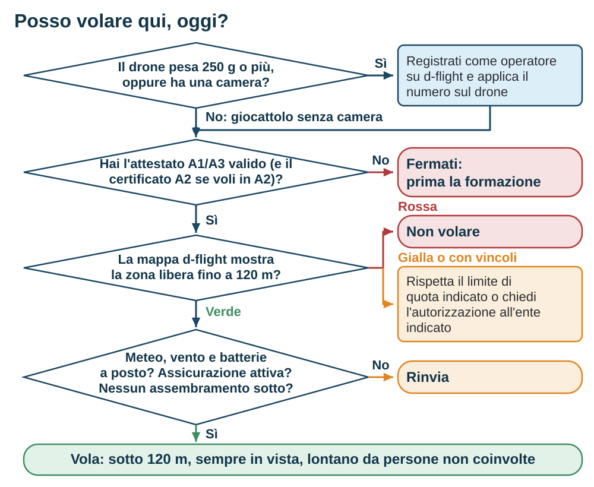

Scheda rapida: la categoria Open
Da stampare e tenere nella borsa del drone.
Regole UE 2019/947 e Italia, fonti consultate il 20 settembre 2026.
| Sotto- categoria | Drone | Distanza dalle persone non coinvolte | Formazione |
|---|---|---|---|
| A1 | C0; art. 20 < 250 g; costruito privatamente < 250 g e < 19 m/s | Sorvolo ammesso, mai su assembramenti | Lettura del manuale; A1/A3 non richiesto, consigliato |
| A1 | C1 < 900 g o < 80 J | Nessun sorvolo intenzionale; mai su assembramenti | Attestato A1/A3 |
| A2 | C2 < 4 kg | 30 m; fino a 5 m solo con modalità a bassa velocità attiva e situazione valutata | A1/A3 + pratica dichiarata + esame A2 |
| A3 | C2 C3 C4; art. 20 ≥ 250 g; costruiti privatamente. Meno di 25 kg | Nessuna persona non coinvolta nel raggio d'azione; 150 m da aree residenziali, commerciali, industriali, ricreative | Attestato A1/A3 |
Regole comuni a tutta la Open
- Massa massima al decollo sotto i 25 kg
- Quota massima 120 m dal punto più vicino della superficie terrestre: su un pendio può essere laterale
- Drone sempre in vista a occhio nudo (FPV solo con osservatore accanto)
- Di notte: luce verde lampeggiante attiva, per qualunque drone, non solo C1, C2 e C3
- Mai sopra assembramenti; niente merci pericolose né lancio di oggetti
- Precedenza agli aeromobili con equipaggio; mai dentro o vicino a un'emergenza in corso senza permesso
- Rispetto delle zone geografiche: apri la scheda della zona, il colore da solo non basta
- Pilota di almeno 16 anni in Italia, salvo supervisione diretta, giocattolo C0 o UAS costruito privatamente < 250 g
Prima ancora di uscire
- Operatore registrato su d-flight se il drone ha MTOM da 250 g in su, può trasferire oltre 80 J in impatto, oppure ha un sensore di dati personali e non è conforme alla direttiva giocattoli
- Numero di operatore applicato su ogni tuo drone e caricato nel Remote ID. Il numero e il suo QR sono unici: i QR per singolo drone del listino d-flight sono facoltativi
- Attestato A1/A3 valido (5 anni); certificato A2 se voli in A2
- Assicurazione di responsabilità civile attiva: in Italia è obbligatoria
- Documenti con te, anche in formato digitale
- Firmware e database delle zone aggiornati
Tre soglie da ricordare
- 250 g: sotto, regime più leggero. Un sensore di dati personali fa comunque scattare la registrazione, salvo UAS conforme alla direttiva giocattoli; non fa scattare l'attestato
- 80 J: energia d'impatto oltre la quale serve la registrazione anche sotto i 250 g
- 19 m/s: il limite di velocità che un UAS costruito privatamente deve rispettare per la A1
- 120 m: il tetto dell'operazione, dal punto più vicino della superficie terrestre. Per la classe C0 c'è anche un limite di prodotto, 120 m sopra il punto di decollo
- 150 m: la distanza minima dalle aree abitate in A3
Se qualcosa va storto
- Perdita del link: tieni acceso il radiocomando, osserva il drone, applica la procedura del manuale. Il rientro automatico è una possibilità, non una garanzia. Ripreso il controllo, scegli fra rientro e atterraggio a mano
- Perdita del GNSS: il comportamento dipende dal modello. Riduci la distanza, pilota a mano se serve, atterra appena puoi
- Aeromobile in vista o udibile: scendi e allontanati
- Dopo un evento: soccorri, metti in sicurezza, conserva log e foto. ENAC (ECCAIRS 2) entro 72 ore; ANSV subito e comunque entro 60 minuti per incidenti e inconvenienti gravi, anche senza feriti né danni

Checklist pre-volo
- Zona verificata su d-flight, scheda letta, quota limite annotata
- Meteo: vento e raffiche accettabili, visibilità buona
- Batterie di drone e radiocomando cariche e a temperatura
- Eliche integre, serrate, nel verso giusto
- Gimbal sbloccato, scheda di memoria inserita
- Firmware e zone aggiornati, bussola calibrata se richiesto
- Fix GNSS, punto home registrato e verificato
- Failsafe: sul manuale, che cosa fa questo drone se perde il comando
- Rientro automatico: quota e traiettoria compatibili con gli ostacoli e con il limite di quota della zona; se nessuna quota lo è, cambia area
- Link video e radiocomando provati; antenne orientate come indica il manuale
- Prove motori al banco solo senza eliche
- Area sgombra, osservatore pronto se FPV; avvisare i presenti non li rende persone coinvolte
- Numero di operatore visibile sul drone; di notte, luce verde attiva
Checklist post-volo
- Spegnere prima il drone, poi il radiocomando
- Controllare eliche, motori, carrello
- Batterie: temperatura, gonfiore, carica di conservazione secondo il manuale del pacco
- Scaricare foto, video e log
- Annotare il volo: luogo, durata, batteria, anomalie
Fonti in due link
- d-flight.it: registrazione, QR code, mappa delle zone
- enac.gov.it/sicurezza-aerea/droni: Regolamento UAS-IT, esame A1/A3, FAQ
Sintesi dei capitoli 4, 5 e 7. Non sostituisce i regolamenti né la scheda della zona in cui voli: verifica importi, scadenze ed edizioni alla fonte.